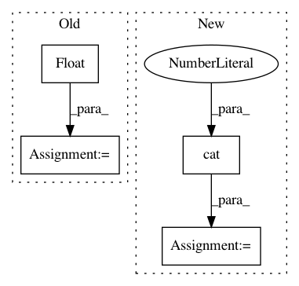

e60669c5aa467d5c11a508c01b37c4ed8e352fa6,torch_geometric/nn/conv/supergat_conv.py,SuperGATConv,forward,#SuperGATConv#Any#Any#Any#Any#,159
Before Change
// X, Y for the self-supervised task
self.att_with_neg_edges = att_with_neg_edges
num_neg_edges = att_with_neg_edges.size(0)
att_label = torch.zeros(num_neg_edges).float().to(x.device)
att_label[:pos_edge_index.size(1)] = 1.
self.att_label = att_label
if self.concat is True:
After Change
return_logits=True,
)
self.att_x = torch.cat([pos_att, neg_att], dim=0)
self.att_y = self.att_x.new_zeros(self.att_x.size(0))
self.att_y[:pos_edge_index.size(1)] = 1.
if self.concat is True:
In pattern: SUPERPATTERN
Frequency: 3
Non-data size: 4
Instances
Project Name: rusty1s/pytorch_geometric
Commit Name: e60669c5aa467d5c11a508c01b37c4ed8e352fa6
Time: 2021-02-15
Author: matthias.fey@tu-dortmund.de
File Name: torch_geometric/nn/conv/supergat_conv.py
Class Name: SuperGATConv
Method Name: forward
Project Name: ultralytics/yolov3
Commit Name: 6116acb8c20ba523fe54111341032c6aec94ead3
Time: 2018-09-09
Author: glenn.jocher@ultralytics.com
File Name: utils/utils.py
Class Name:
Method Name: build_targets
Project Name: facebookresearch/Horizon
Commit Name: 8dcbf002d0058939802920c11f74791708838791
Time: 2018-04-06
Author: edoardoc@fb.com
File Name: ml/rl/training/ddpg_predictor.py
Class Name: CriticNet
Method Name: forward